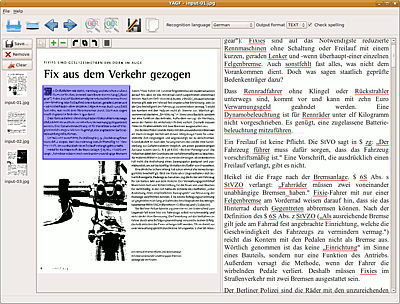
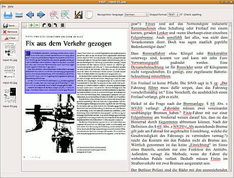
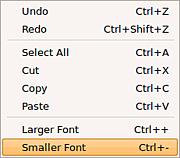

YAGF
Dieser Artikel wurde für die folgenden Ubuntu-Versionen getestet:
Ubuntu 16.04 Xenial Xerus
Ubuntu 14.04 Trusty Tahr
Zum Verständnis dieses Artikels sind folgende Seiten hilfreich:
YAGF  ("Yet Another Graphical Frontend for cuneiform") ist ein grafisches Frontend für die Texterkennungsprogramme Cuneiform und Tesseract (auch Tesseract-Version 3). Als Datenquelle kann es diverse Bildformate und PDF-Dateien verarbeiten, kann aber auch direkt aus dem Programm heraus über XSane scannen. Die Texterkennung unterstützt das Verarbeiten mehrseitiger Dokumente (Stapelverarbeitung), und man kann den erfassten Text mit Aspell auf richtige Schreibweise überprüfen lassen oder ggf. selbst im Editorfenster direkt korrigieren. Mit YAGF lassen sich auch zweisprachige Vorlagen (russisch/englisch oder französich, spanisch, deutsch) bearbeiten.
("Yet Another Graphical Frontend for cuneiform") ist ein grafisches Frontend für die Texterkennungsprogramme Cuneiform und Tesseract (auch Tesseract-Version 3). Als Datenquelle kann es diverse Bildformate und PDF-Dateien verarbeiten, kann aber auch direkt aus dem Programm heraus über XSane scannen. Die Texterkennung unterstützt das Verarbeiten mehrseitiger Dokumente (Stapelverarbeitung), und man kann den erfassten Text mit Aspell auf richtige Schreibweise überprüfen lassen oder ggf. selbst im Editorfenster direkt korrigieren. Mit YAGF lassen sich auch zweisprachige Vorlagen (russisch/englisch oder französich, spanisch, deutsch) bearbeiten.
Installation¶
Seit Ubuntu 14.04 ist das Programm in den offiziellen Paketquellen zu finden:
yagf
 mit apturl
mit apturl
Paketliste zum Kopieren:
sudo apt-get install yagf
sudo aptitude install yagf
Um Dokumente direkt aus YAGF heraus zu scannen, muss XSane installiert sein:
xsane
mit apturl
Paketliste zum Kopieren:
sudo apt-get install xsane
sudo aptitude install xsane
Das installierte Programm findet sich z.B. in GNOME unter "Anwendungen -> Grafik -> YAGF"[4]
Bedienung¶
Die Digitalisierung des Textes wird in vier Schritten vorgenommen: Bild-Dateien laden/scannen, Dateien zur Verarbeitung vorbereiten, die eigentliche Texterkennung durchführen und schließlich das Abspeichern des Ergebnisses.
Dateien laden¶
YAGF kann die gängigen Bildformate JPEG, PNG, BMP, TIFF, GIF, PNM, PPM ,PBM und PDF verarbeiten. Bereits existierende Dateien können per "File -> Open Image..." oder der entsprechenden Schaltfläche importiert werden. PDFs werden über "Datei -> Import from PDF" eingelesen. Falls die Dateien durchnummeriert sind (z.B. bild001.png, bild002.png etc.), kann mit den Pfeiltasten schnell das nächste oder vorherige Bild aus dem selben Ordner geladen werden. Die geladenen Bilder sind als Miniaturen im Sidebar sichtbar.
Mit "File -> Scan..." oder der Scanner-Schaltfläche können Bilder via XSane gescannt und direkt importiert werden. XSane wird geöffnet, die Vorlagen werden standardmäßig als Strichzeichnung mit einer Auflösung von 300 dpi gescannt, das kann aber den eigenen Bedürfnissen entsprechend geändert werden. Die Format-Auswahl ist in XSane allerdings ausgeblendet. Die gescannten Vorlagen erscheinen durchnummeriert als input-xx.jpg-Dateien in YAGF. Die Navigation in den Dateien kann ebenfalls mit den Pfeiltasten erfolgen. XSane kann während der Arbeit mit YAGF geöffnet bleiben; neu erstellte Scans werden automatisch importiert. Beim Beenden von YAGF wird auch XSane geschlossen.
Die im Sidebar angezeigten Bilder können einfach mit der "Save"-Taste komplett abgespeichert werden; "Remove" entfernt das gerade im Betrachter angezeigte Bild, "Clear" entfernt alle Bilder aus dem Vorschau-Fenster, in Version 0.9 können die Miniaturen stattdessen angklickt und mit gedrückter  -Taste in den Papierkorb unten in der Seitenleiste befördertwerden. Eine nachträgliche Sortierung ist aber leider nicht vorgesehen.

-Taste in den Papierkorb unten in der Seitenleiste befördertwerden. Eine nachträgliche Sortierung ist aber leider nicht vorgesehen.

Texterkennung vorbereiten¶
Den zu verwendenden OCR-Engine stellt man im Menü "Settings" ein, dort kann auch der Ort des tessdata-Verzeichnisses angegeben werden.
Im Hauptfenster von YAGF sind zwei große Fenster vorhanden. Links wird im Betrachter-Fenster das zu bearbeitende Dokument angezeigt, rechts das Ergebnis der Texterkennung. Im Betrachter-Fenster kann das Bild mit den Schaltflächen oben bei Bedarf gedreht werden. Mit der Plus- und Minus-Fläche wird die Ansicht vergrößert bzw. verkleinert, dazu können auch
Strg +
+ und
Strg +
- oder das Mausrad  in Verbindung mit gedrückter
Strg verwendet werden. Das hat keinen Einfluss auf die Auflösung für den eigentlichen Erkennungsprozess, es wird auch die gesamte Seite gescannt, wenn sie nicht ganz sichtbar ist. Mit kann eine exakte Auswahl aufgezogen werden, die erfasst werden soll. Mit der "Read as single column"-Fläche kann man YAGF anweisen, keine Spaltenerkennung vorzunehmen - ggf. sinnvoll für Texte mit großen Wortabständen (in Version 0.9 nicht mehr vorhanden).
in Verbindung mit gedrückter
Strg verwendet werden. Das hat keinen Einfluss auf die Auflösung für den eigentlichen Erkennungsprozess, es wird auch die gesamte Seite gescannt, wenn sie nicht ganz sichtbar ist. Mit kann eine exakte Auswahl aufgezogen werden, die erfasst werden soll. Mit der "Read as single column"-Fläche kann man YAGF anweisen, keine Spaltenerkennung vorzunehmen - ggf. sinnvoll für Texte mit großen Wortabständen (in Version 0.9 nicht mehr vorhanden).
Texterkennung durchführen¶
Dazu muss zunächst die gewünschte Sprache im Dropdown-Menü "Recognition Language" ausgewählt werden, zur Verfügung stehen die meisten der in Cuniform-Linux möglichen Sprachen, ausgenommen serbisch, kroatisch und slowenisch. Zusätzlich lassen sich mehrsprachige Textvorlagen (russisch jeweils in Kombination mit englisch, deutsch, französisch und spanisch) verarbeiten. Als Ausgabeformat lassen sich momentan nur "HTML" oder "TEXT" auswählen; die weiteren Cuneiform-Linux-Formate sind noch nicht implementiert. Einige Sprachen liegen nur für tesseract vor, sie müssen natürlich zuvor installiert werden.
Die eigentliche Erkennung erfolgt über die "Recognize"-Schaltfläche (angezeigtes Bild oder Ausschnitt) oder "Recognize all"-Schaltfläche. Mit letzterer werden alle Bilder als Stapel nacheinander verarbeitet, allerdings lassen sich in dem Modus keine gesonderten Auswahlen treffen.  Das Ergebnis wird im Editor-Fenster angezeigt; dort wird der Text, wenn die Checkbox "Check spelling" aktiviert ist, automatisch überprüft und kann korrigiert werden; ab Version 0.8.6 existiert dafür eine "ABC"-Schaltfläche. Zur Anzeige von ggf. falsch geschriebenen oder erkannten Wörtern ist natürlich die entsprechende Aspell-Sprachdatei nötig; wenn sie nicht vorhanden ist, wird eine Fehlermeldung ausgegeben. Neu erstellte Texterkennungen werden an die bestehenden angehängt, sodass auch mehrseitige Projekte einfach in einer gemeinsamen Text/HTML-Datei erfasst werden können. Über das Kontextmenü lassen sich neben Bearbeitungsoptionen auch die Größe der angezeigten Schrift einstellen.
Wenn im erkannten Text Notierungen wie
/0.bmp width=360 height=518 alt="output_files/0"-- /1.bmp width=168 height=165 alt="output_files/1"--
vorkommen, sind Teile der Vorlage als Bilder erkannt worden; diese Dateien werden in ~/.yagf/output_files als .bmp-Dateien abgelegt. Die temporären Vorlagedateien (input_xx.jpg) werden ebenfalls in ~/.yagf zwischengespeichert. Mit Beenden des Programms werden all diese Daten gelöscht; wer sie benötigt, muss also vorher darauf zugreifen.
Texte abspeichern¶
Das korrigierte Ergebnis kann dann als Datei (Schaltfläche "Save Text") abgespeichert, oder auch in die Zwischenablage kopiert werden ("Copy recognized text to clipboard"). Wenn im Text-Editor kein Abschnitt markiert ist, wird der gesamte Text in die Zwischenablage geschrieben.
Tastenkürzel¶
| YAGF Hauptfenster | ||
| Tasten | Funktion | Übersetzt |
| Strg + O | Open Image... | Bild öffnen... |
| Strg + N | Scan | Scannen |
| Strg + R | Recognize | Text erkennen |
| Strg + A | Recognize all pages | Text aller Seiten erkennen |
| Strg + S | Save text... | Text speichern... |
| Strg + Q | Quit | Beenden |
| Bearbeitungsfenster | ||
| Strg + Z | Undo | Rückgängig |
| Strg + ⇧ + Z | Redo | Wiederholen |
| Strg + A | Select All | Alles auswählen |
| Strg + X | Cut | Ausschneiden |
| Strg + C | Copy | Kopieren |
| Strg + V | Paste | Einfügen |
| Strg + + | Larger Font | Größere Schrift |
| Strg + - | Smaller Font | Kleinere Schrift |
Probleme und Lösungen¶
Ggf. gibt es Probleme, Dateien zu öffnen (siehe auch diesen Bug-Report auf debian.org). Dann hilft es, im Reiter "Edit -> Settings-> Image Processing" die Option "Crop Image When Loaded box" abzuwählen.
Falls keine Erkennung erfolgt, muss ggf. in "Edit -> Settings -> OCR and Languages" der korrekte Pfad zu den "Tesseract-Data-Files" angegeben werden. Standardmäßig sollte es "/usr/share/tesseract-ocr/" sein, ggf. an die eigenen Gegebenheiten anpassen.
Alternativen¶
Texterkennung
 - Übersichtsseite
- ÜbersichtsseiteOCRFeeder - kann ebenfalls scannen und Texte erkennen, mit Einstellung der Bereiche, Sprache und einigem mehr.
cuneiform-qt - ein ähnliche, ebenfalls noch in der Entwicklung befindliches Programm, das die Formate PNG, JPG, BMP und TIF auslesen kann
xsane2cunei - ermöglicht es, Cuneiform-Linux direkt aus XSane heraus zu verwendet; damit sind alle Cuneiform-Ausgabeformate verwendbar, allerdings ist keine direkte Korrektur möglich.
OcrGui - OCR-Programm, das neben tesseract-ocr auch GOCR
als OCR-Engine verwenden kann, die Entwicklung des Programms stagniert leider seit 2011.
- Erstellt mit Inyoka
-
 2004 – 2017 ubuntuusers.de • Einige Rechte vorbehalten
2004 – 2017 ubuntuusers.de • Einige Rechte vorbehalten
Lizenz • Kontakt • Datenschutz • Impressum • Serverstatus -
Serverhousing gespendet von